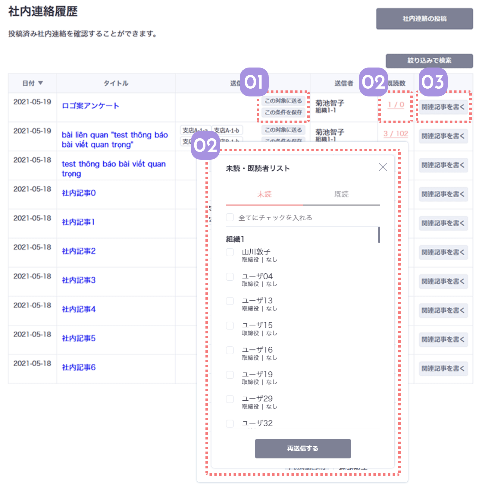

過去に送った社内連絡が一覧で並ぶ送信履歴は、連絡担当の方に便利な機能満載！
過去に送った対象と同じ対象に新たに記事を書いたり、過去の記事の関連記事を書いたりできます。
既読者を確認して、まだ読んでいない人にリマインドを送ることもできますよ！

01
以前に送った条件から対象を選べます
以前に送った社内連絡の公開対象の条件を保存したり、そのまま同じ対象に社内連絡を新たに送信できる機能です。
条件を保存すると、公開対象の選択画面でその対象を選択することができるようになります。
02
社内連絡の既読率と既読者を確認できます
ここでは送った社内連絡の既読者数がわかります。
既読数は記事を開いた人の数になります。
記事を読んでいない人にチェックをつけて、再送信でリマインドすることもできます。
03
過去の記事を引用して関連記事を書けます
「関連記事を書く」ボタンを押すと、選択した記事が引用された状態で社内連絡の投稿フォームに移動します。
過去の社内連絡に関連する話題の時に利用すると、読み手がすぐに過去の記事を見ることができます。
